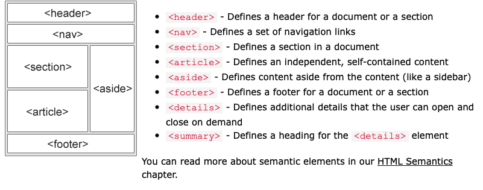

Websites often display content in multiple columns (like a magazine or a newspaper).
HTML has several semantic elements that define the different parts of a web page
There are four different techniques to create multicolumn layouts. Each technique has its pros and cons.
You can use a framework like bootstrap or w3.css.
It is common to do entire web layouts using the CSS float property. Float is easy to learn - you just need to remember how the float and clear properties work. Disadvantages: Floating elements are tied to the document flow, which may harm the flexibility. Learn more about float in our CSS Float and Clear chapter.
Use of flexbox ensures that elements behave predictably when the page layout must accommodate different screen sizes and different display devices.
The CSS Grid Layout Module offers a grid-based layout system, with rows and columns, making it easier to design web pages without having to use floats and positioning.